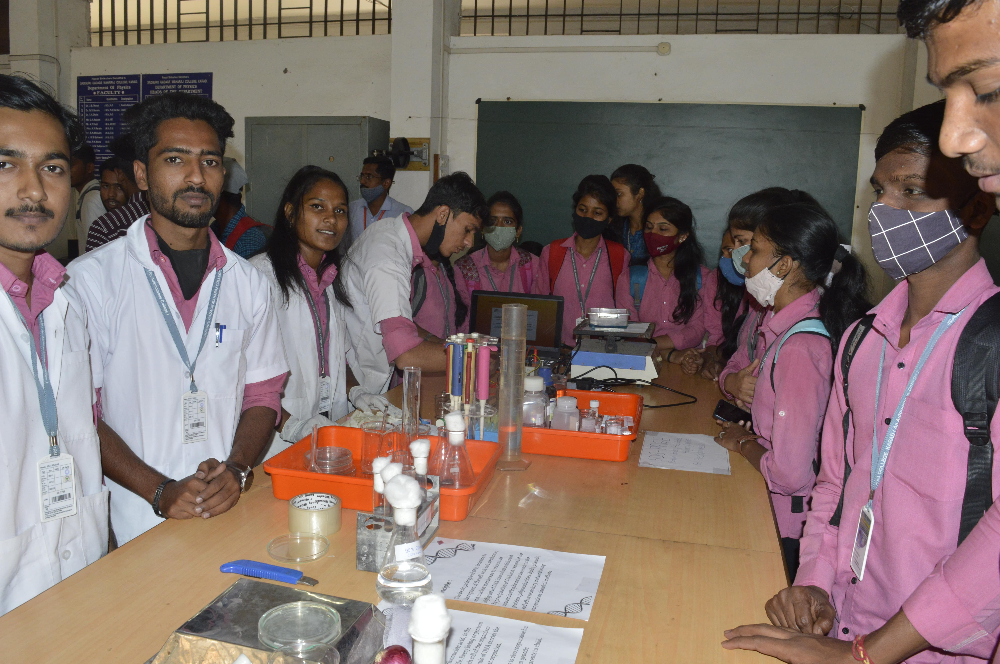

SHREE SHIVAJI EDUCATION SOCIETY'S
YASHWANTRAO CHAVAN COLLEGE OF SCIENCE, KARAD
Accredited ' A+ 'with CGPA 3.63 by NAAC ISO 9001:2015 Certified


Biology Department
The history of mankind is the history of science and the history of science is the history of biology. The Department of Physics was established in 1958 and the subject is taught in this college from standards XI to B. Sc. III. The department has a very good infrastructure with spacious laboratories of dimensions about 1800 sq ft with several modern equipments and instruments such as Michelson’s Interferometer, Abbe’s Refractometer and LASER Set up, etc. A number of students have secured ranks in the merit list of University examinations over the years.
This department was established in 2008-09 as the first UG Department of Biotechnology (Optional) in Satara district to teach the advance subject of Life sciences (Biotechnology) to undergraduate level and is one of the budding departments in the college.
The current capacity for this course is 66 seats and run on the Non grant-in-aid basis. Admissions strictly based on merit basis as per university rules. The eligibility criterion for this course is 12th Pass candidate from science stream.
Our laboratory was recognized by Shivaji University Kolhapur in 2008 for UG Biotechnology course. The department also conducts research project and entrepreneurship programme which is indigenously designed to cater to the needs of pharmaceutical, fermentation and research.
What Science subjects do we teach?
| Group A |
Group B |
| Physics |
Marathi |
| Chemistry |
Information Technology |
| Biology |
German |
| Zoology |
Geograohy |
| Microbiology |
Mathematics |
Gallery